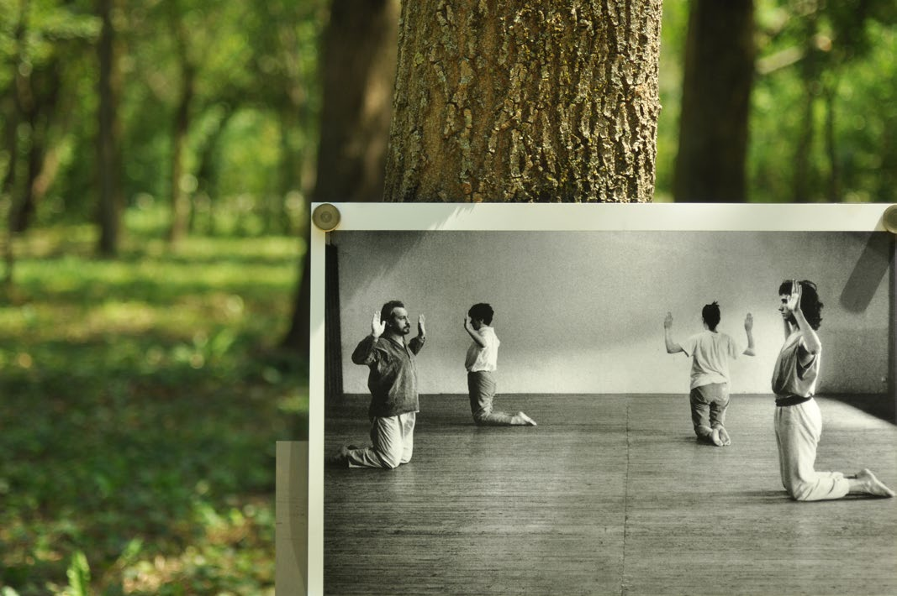

2023, Il bosco dell’esercizio. Sette movimenti per un’arte della terra. Nomadic Landscape Salute e Paesaggio, P.I.R. Post Industriale Ruralità, presso Ass. Idea Salute, Brescia.

2023, Il bosco dell’esercizio. Nomadic Landscape. Salute e Paesaggio, P.I.R. Post Industriale Ruralità, presso Ass. Idea Salute, Brescia.

2023, Il bosco dell’esercizio. Nomadic Landscape. Salute e Paesaggio, P.I.R. Post Industriale Ruralità, presso Ass. Idea Salute, Brescia.